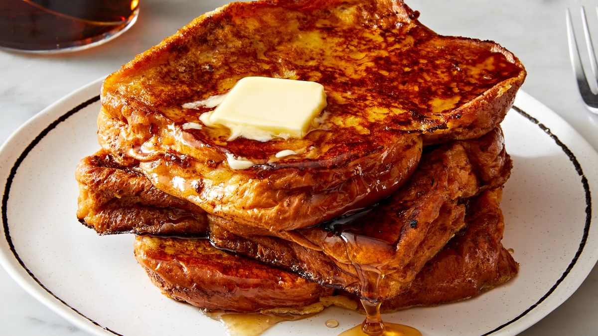

French Toast

Description
There's nothing better than a big stack of French toast on a weekend morning. If you're looking for a simple and delicious recipe for the best breakfast food ever created, you're in the right place!
Just follow along with this recipe and you'll be filling your home with the aromas of cinnamon and maple just like Grandma always did!
3-6 servings
Ingredients
- 3 large eggs
- 1 cup whole milk
- 2 tablespoon granulated sugar
- 1-1/2 teaspoon pure vanilla extract
- 3/4 teaspoon ground cinnamon
- 3/4 teaspoon kosher salt
- 6 (1" thick) slices bread
- 3 teaspoon unsalted butter, divided
- 3 teaspoon neutral oil, divided
- Pure maple syrup, for serving
Steps
- In a large bowl, whisk eggs to blend. Whisk in milk, granulated sugar, vanilla, cinnamon, and salt until combined.
- Add 2 bread slices to egg mixture and let soak, partially submerged, until bottom half of bread is saturated, about 30 seconds. Using a fork, flip bread and soak 30 seconds longer.
- Meanwhile, in a large skillet over medium heat, heat 1 teaspoon butter and 1 teaspoon oil. Add soaked bread and cook until golden brown and crisp, about 3 minutes per side. Repeat with remaining butter, oil, and bread.
- Divide French toast among plates. Serve with more butter and maple syrup alongside.